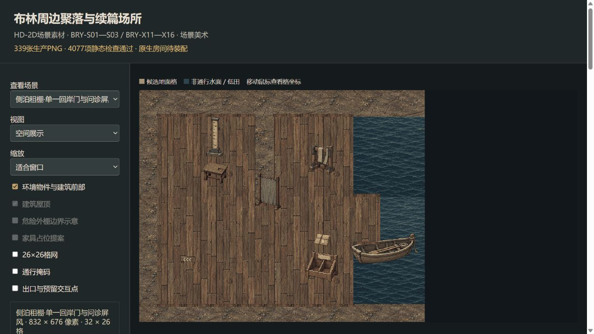
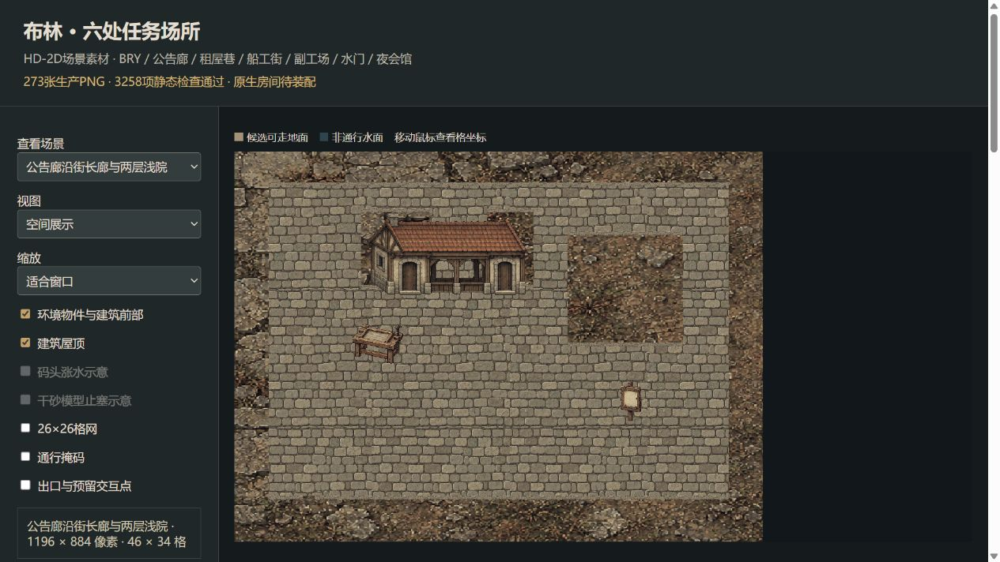
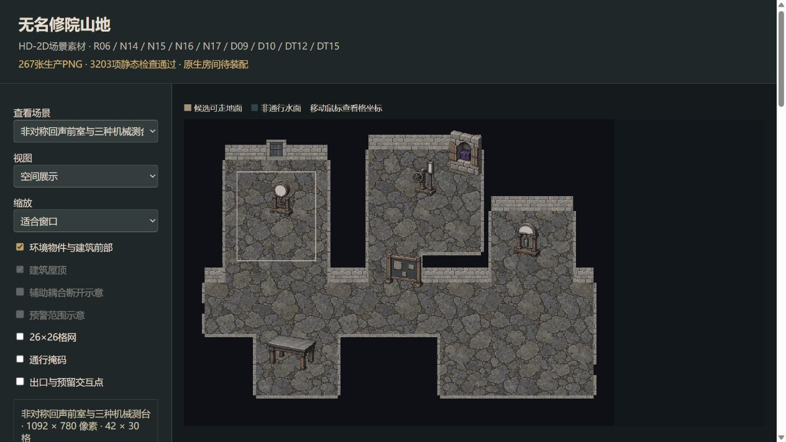
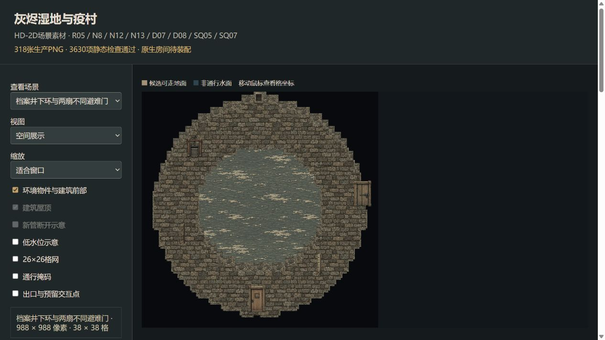
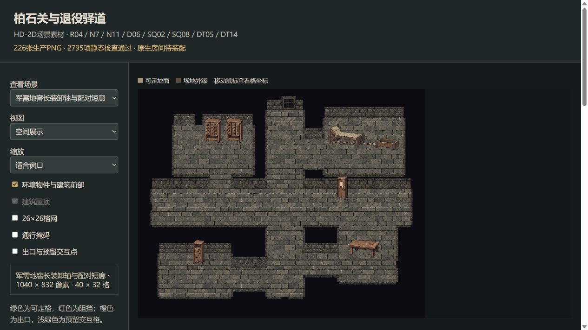
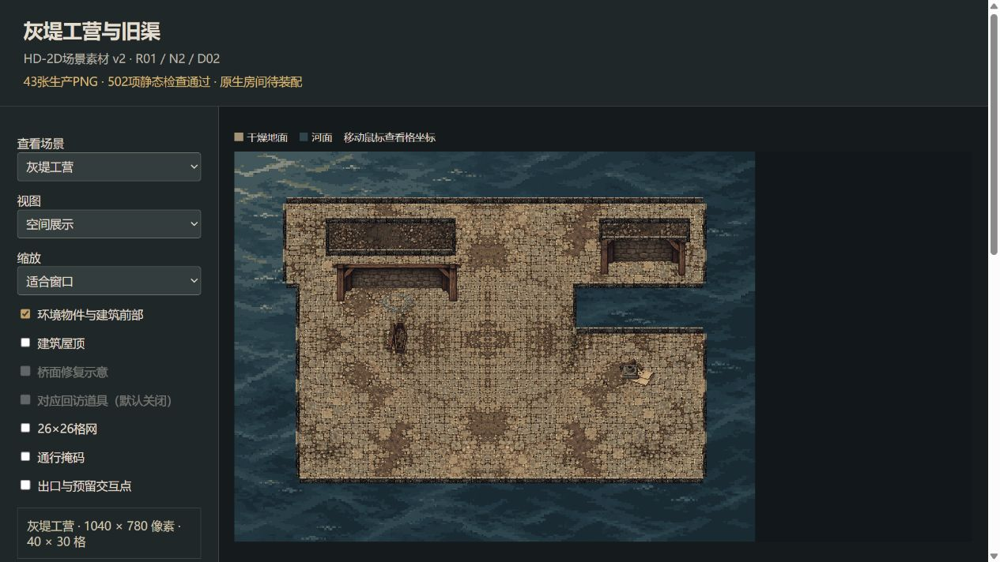
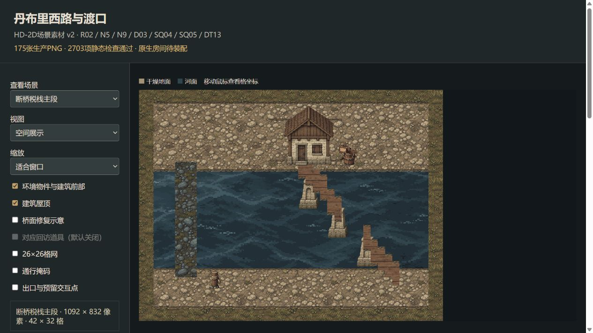
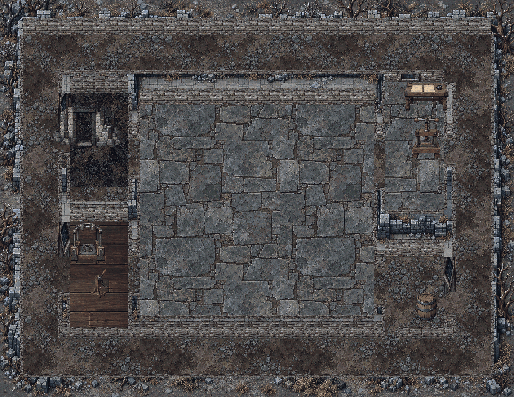

平面地图、建筑外观与室内工作空间。原稿、分层PNG、脚底原点及导入说明随各批素材保留。
此前已导出193项视图；其中0项因台本更新待补画/复核。尚未绘制552项。

339张生产PNG · 可导入分层素材

273张生产PNG · 可导入分层素材

267张生产PNG · 可导入分层素材

318张生产PNG · 可导入分层素材

226张生产PNG · 可导入分层素材

43张生产PNG · 可导入分层素材

175张生产PNG · 可导入分层素材

223张生产PNG · 可导入分层素材
68张生产PNG · 可导入分层素材
26张生产PNG · 可导入分层素材